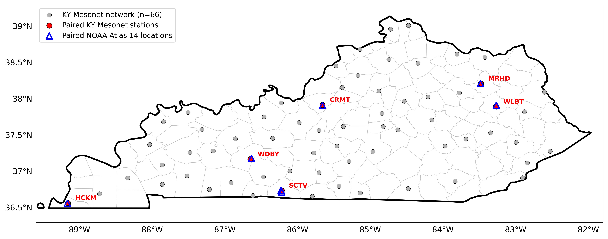
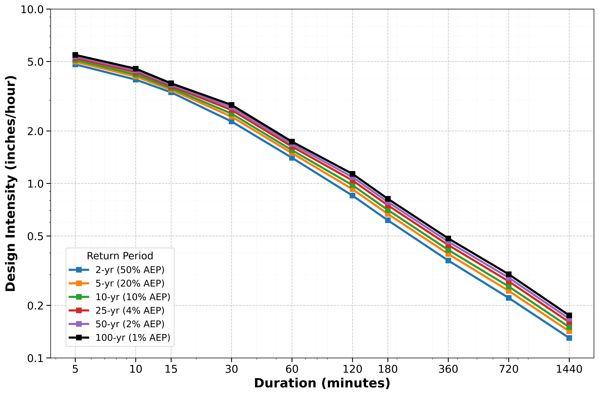
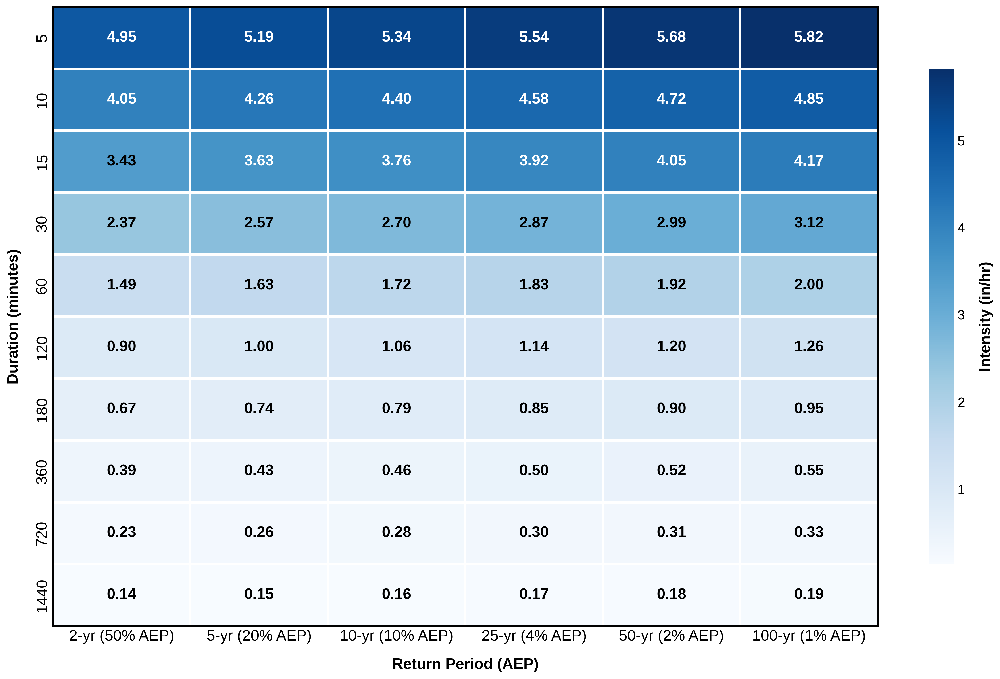
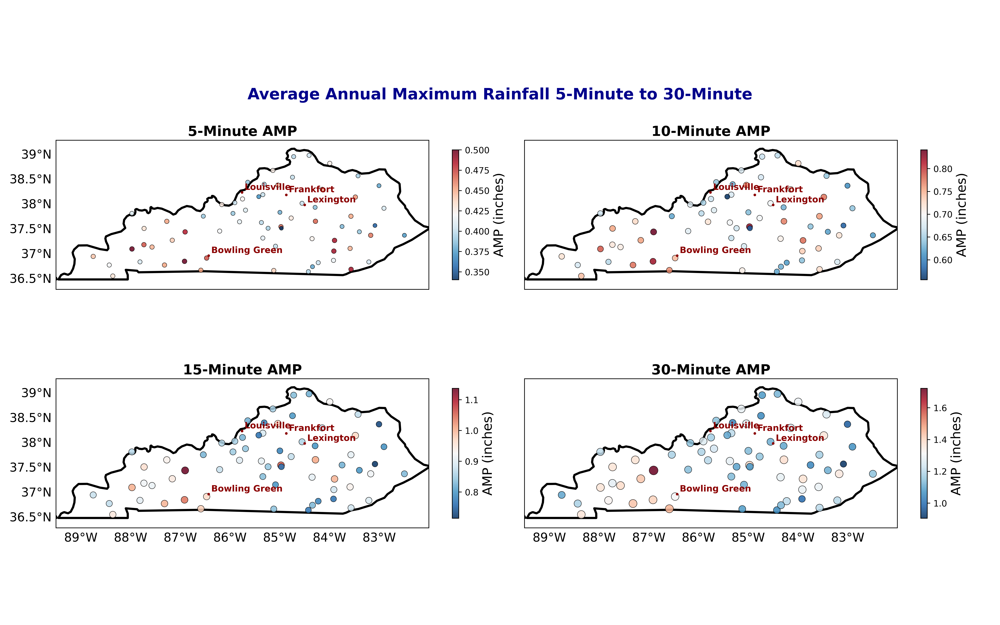

Nana O. Pinkrah; Sanskar Adhikari; Pyper Tobbe; Zachary J. Suriano
Under editorial review.
Evaluate precipitation-frequency statistics derived from the Kentucky Mesonet and compare them with NOAA Atlas 14.
Five-minute observations from 66 quality-controlled Kentucky Mesonet stations and NOAA Atlas 14 estimates.
Annual maximum precipitation, Gumbel-derived IDF estimates, return periods from 2-100 years, and paired station comparisons.

Kentucky Mesonet and NOAA Atlas 14 paired station locations.

Statewide representative intensity-duration-frequency curve.

Intensity-duration-frequency heatmap.

Spatial structure of precipitation-frequency estimates across durations.
Reliable precipitation-frequency estimates are essential for stormwater design, flood-risk planning, and resilience, particularly where short-duration rainfall strongly influences flash flooding.